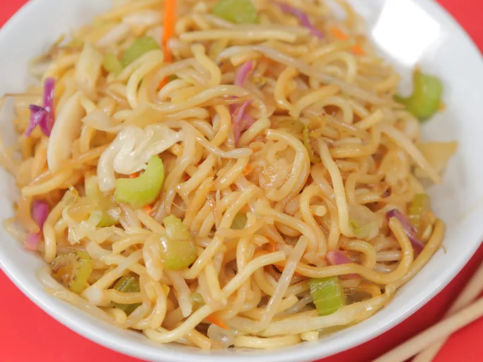

Chow Mein

Description
This chow mein is a pretty good copy of the Panda Express version that can be made in less time than it would take to get delivery. It takes about 11 mins to create and allows for 4 servings.
- 3 tablespoons canola oil
- 1 tablespoon sesame oil
- 1/2 white onion, finely chopped
- 2 stalks celery, sliced
- 1 tablesppon chopped fresh ginger
- 3 cups shredded coleslaw mix
- 5 ounches bean sprouts
- 1 package pre-cooked stir-fry noodles
- 1/4 cup tamari
- 2 tablespoons mirin
Steps:
- Heat canola and sesame oil in a wok over high heat
- Add onion, celery, and ginger to the wok and cook, stirring often, for 1 minute
- Add coleslaw mix and sprouts and cook, stirring often, for 2 minutes
- Add noodles and cook, stirring constantly, for 1 minute
- Add tamari and mirin and cook for 2 minutes stirring occasionaly
Home